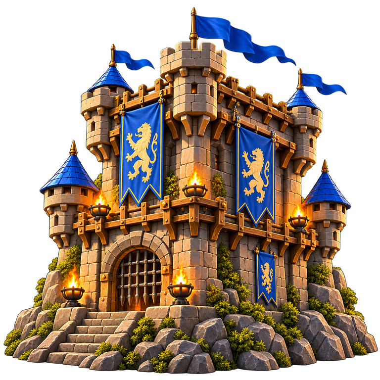
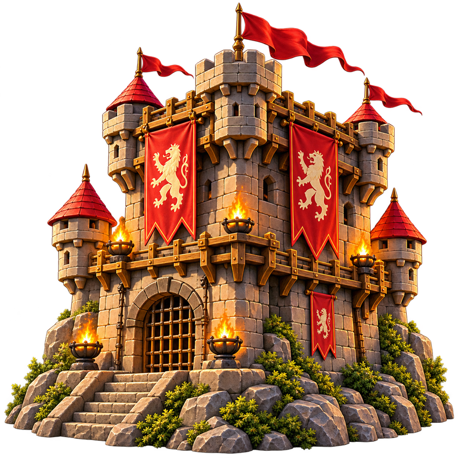

SPELBORDETFörhandsvisning · 1 mot 1
MOTSTÅNDAREN
Norra tornet
10 kort på handen

STRIDSPLATSEN
Ditt anfall
Välj ett attackkort ur handen.
Kortlek
0
SlänghögDU
Södra tornet
10 kort på handen

Din tur att välja kort
Ställ in teststriden
Byte av kort eller startliv återställer teststriden. Prova ett liv för sista-livet-korten eller två liv för läkning.
DINA KORT
Ett kort kan vända striden.
10 kort
Byte av hand startar en ny teststrid.